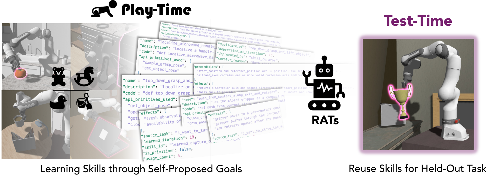
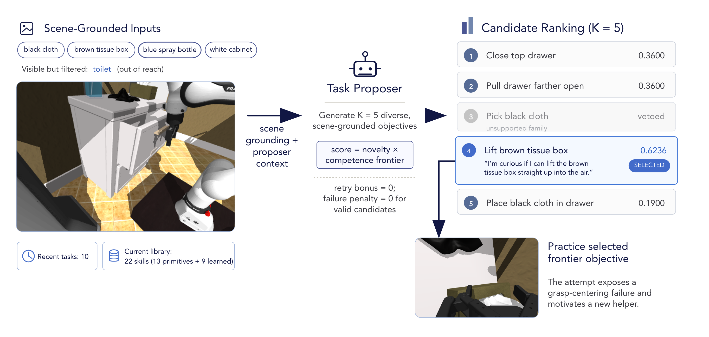
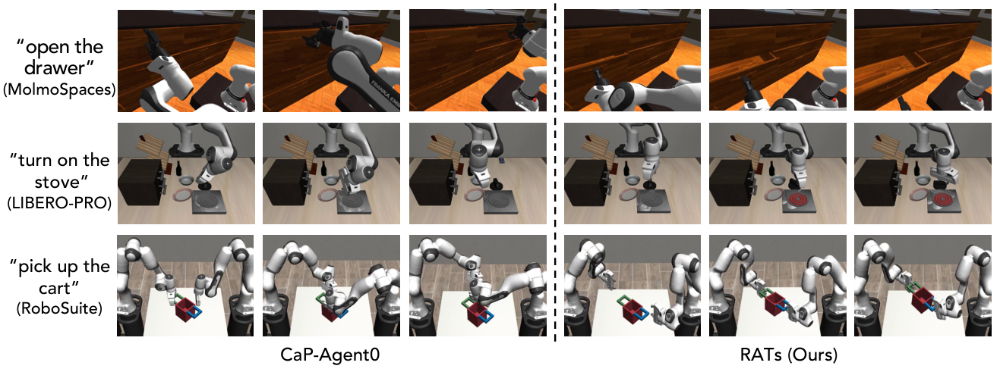
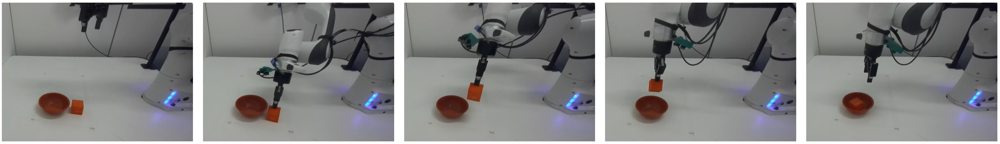
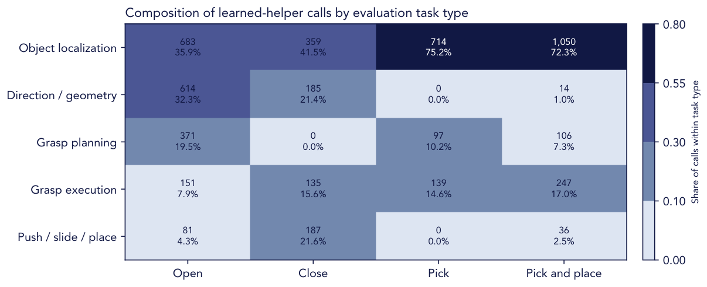
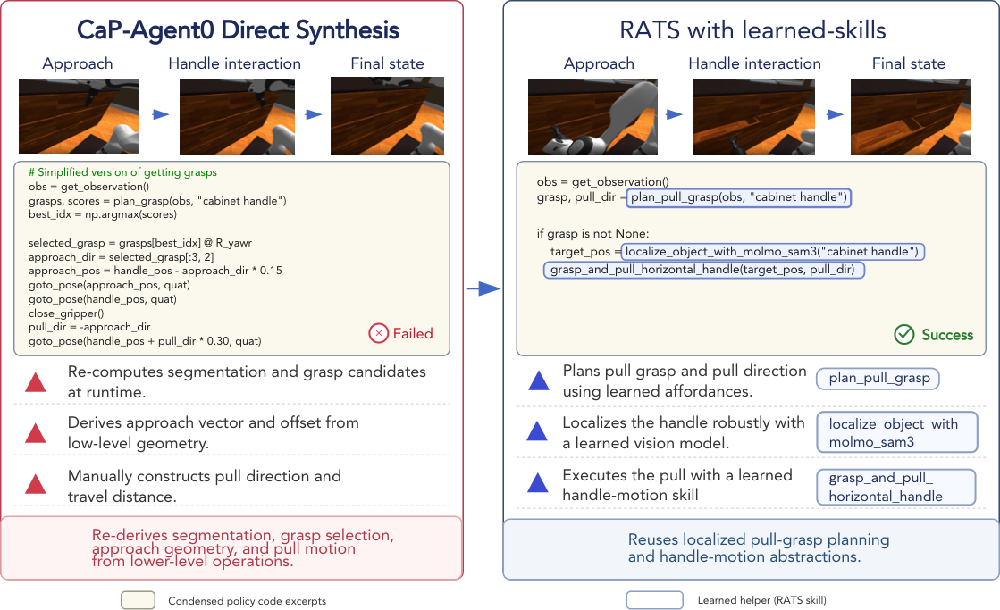
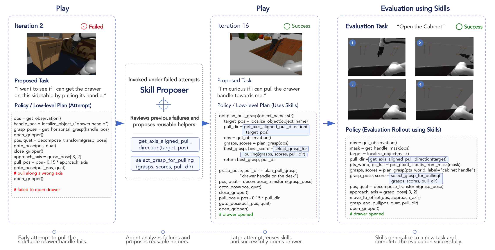

01
Find the competence frontier
The task proposer favors rarely tried object-skill combinations that remain learnable: neither trivial nor impossible.
Pipeline video
pipeline-overview.mp4
RATs learns before it is asked. The system uses self-directed play to propose useful manipulation tasks, solve them with a specialized robot-agent team, and distill successful behavior into callable code skills.

Current agentic robot systems can write executable Code-as-Policy programs, observe feedback, and revise behavior across attempts, but they remain largely task-driven. RATs studies Playful Agentic Robot Learning, where an embodied coding agent uses self-directed play as a continual skill-learning stage before downstream tasks arrive.
During play, RATs proposes novel yet learnable tasks, plans and executes robot-code policies, verifies intermediate progress, diagnoses failures, retries with feedback, and distills successful executions into a persistent code skill library. The resulting skills improve held-out downstream tasks and can be plugged into other inference-time Code-as-Policy agents without model finetuning.
Method
RATs turns autonomous interaction into a persistent, reusable skill library.

01
The task proposer favors rarely tried object-skill combinations that remain learnable: neither trivial nor impossible.
02
A planning agent retrieves relevant skills, while execution agents turn the grounded plan into a robot-control program.
03
Goal and per-step verifiers localize failures. A diagnoser routes concrete feedback into retries or isolated SubAgent practice.
04
Successful routines become named code skills that can be retrieved, composed, and transferred to unseen environments.
The planner turns each proposed task into ordered steps and retrieves only the skills relevant to those steps.
The Policy Writer generates executable robot-control programs. A SubAgent isolates persistent local bottlenecks.
Goal and per-step verifiers separate final success from intermediate progress and make retries more targeted.
Successful behavior becomes reusable code; failures become compact lessons that shape future practice.
Results
Skills improve downstream performance.
LIBERO-PRO
MolmoSpaces
RATs skills plug into different simulation environments and real-world settings without task-specific model finetuning.
RoboSuite cross-environment transfer
Real-world transfer

Real-world manipulation with reusable robot skills.
Real-world transfer of learned localization and transport routines.
Real-world manipulation with learned grasping and pulling routines.
Reusing learned skills across downstream simulation tasks.
Composing learned skills for diverse articulated-object tasks.
Transferring the learned skill library across simulation environments.

Analysis
Across iterations, the proposer explores object-skill combinations rather than repeatedly sampling the same easy behavior.
The persistent skill library lets useful routines survive beyond a single episode and become ingredients for later tasks.
Opening, closing, picking, and placement tasks retrieve distinct mixtures of learned perception, geometry, grasping, and motion helpers.

Step-level checks expose where direct synthesis fails and give the agent concrete evidence for targeted retries and skill refinement.

Verified routines become persistent tools that can be retrieved and composed for downstream evaluation tasks.

Citation
In progress